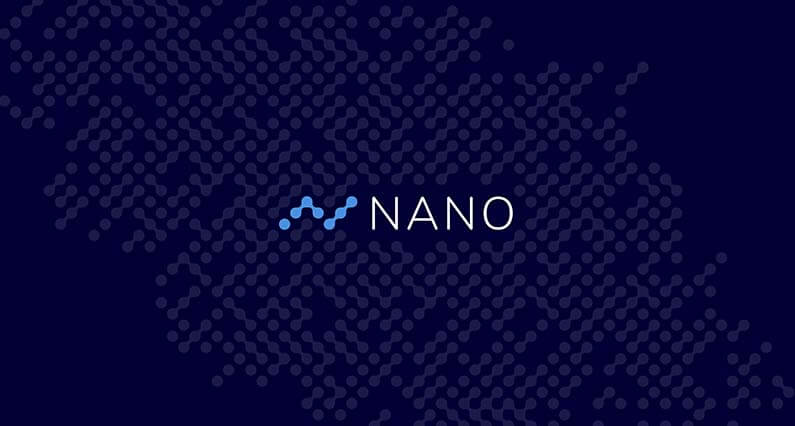
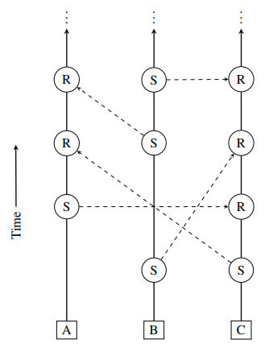

Mi az a Nano? Útmutató kezdőknek
RaiBlocks 2018. Január 31-től Nano néven fut tovább.
Nano blokk rács technológiájával Bitcoin babérjaira pályázik. A kriptovaluta ígérete szerint zéró tranzakciós díjakkal dolgozik mindezt instant tranzakciókkal. Emellett még elektromos áram felhasználása is elenyésző, majdnem a túl szép, hogy igaz legyen kategória.
Mi az a Nano?
Nano egy megbízható, gyors kriptovaluta amely az egyedülálló blokk rács rendszert használja. Nano hálózaton minden fióknak saját blokklánca van, megegyezésre pedig a Delegated Proof of Stake (DPoS) szavazati mechanizmust használja. Díjak nélküli, instant tranzakciókat ajánl, csakúgy mint korlátlan bővíthetőséget, ezáltal ideális platformmá téve Nano-t a felhasználók közötti tranzakciókra. A hálózatnak minimális erőforrásokra van szüksége a működéshez, mivel nincs szükség bányászatra.
Nano müködése
A hagyományos blokklánc technológiával szemben Nano egyedülálló blokk rács rendszert használ. Minden számlának saját blokklánca van, amely tartalmazza a tranzakció történetet és a számla egyenlegét. Minden számla blokklánca csak és kizárólag a számla tulajdonosa által lehet frissítve. Ez lehetővé teszi, hogy minden számla blokklánca azonnal és aszinkron módon frissüljön, amelynek következménye a nagyon gyors tranzakciók.
Mivel minden számla blokkláncához csak a tulajdonos adhat új blokkot, ezért minden tranzakció két művelettel hajtható végre. Az egyik a küldő utalás amely levonja a küldő fél számlájáról az összeget, a másik a fogadó utalás amely hozzáadja a fogadó fél számlájához az összeget. A fogadó félnek nem kell online lennie ahhoz, hogy megkapja az összeget.
Nano előnyei
Zéró tranzakciós díj
Mivel a Nano Protokoll nagyon könnyű és egy node futtatása szinte semmibe sem kerül, ezért Nano képes tranzakciós díjak nélkül működni.
Instant tranzakciók
Spam védelem ellen a Nano számláknak egy kis Proof of Work rejtvényt meg kell oldaniuk, ez csak pár másodpercet vesz igénybe. Ahhoz, hogy a tranzakciók mégis azonnaliak legyenek, ezeket előre elvégzi az előző tranzakcióval.
Bővíthetőség
Minden Nano tranzakció a fő blokklánctól függetlenül van kezelve. Ez hatékonyan megoldja a blokkméret problémákat, mivel a hálózati csomópontoknak nem kell az egész hálózat tranzakcióit kezelni. Ehelyett csak az önálló számlák egyenlegét kell tárolniuk a teljes blokklánc főkönyve helyett.
Nano egyedi számla blokkláncai nagyon könnyűvé teszik az infrastruktúrát, ennek eredményeként a blokk rács jobb bővíthetőséget kínál, mint a hagyományos blokklánc technológia.
Nano megegyezési mechanizmusa
Mivel minden Nano számlának megvan a saját blokklánca, csak az a számla tud új blokkot hozzáadni a blokklánchoz, tehát nincs szükség egy bányászra, hogy ellenőrizze a tranzakciókat.
Nano tranzakcióknak nem kell az előző tranzakciókra hivatkozniuk, hogy ők a jogos tulajdonosai a küldött összegnek. Minden küldött utalásnak a tulajdonos előző blokkjára kell hivatkoznia. Ezáltal kettős költekezés veszélye csak akkor állna fenn, ha valaki ugyanarra az előző blokkra próbálna meg hivatkozni. Ebben az esetben a Nano rendszer szavazással dönt melyik a helyes tranzakció.
Minden számla tulajdonos a számla felállításánál kiválaszt egy képviselő csomópontot(node). Ennek csak az a funkciója, hogy mindig online legyen és szavazzon. Mindenki lehet képviselő egyenlegtől függetlenül.
Amikor egy számla tulajdonos kiválasztja a képviselőit, az adott számla egyenlegével nő a szavazó node szavazó ereje. A szavazatok ereje az adott számlák egyenlegével súlyozott, tehát akiknek több pénzük van a számlán, nagyobb szavazati joggal bír. A nagyobb egyenleggel bíró számláknak nagyobb motivációjuk van a rendszer tisztességes fenntartására, mert nekik több a vesztenivalójuk.
Különbség Bitcoin és Nano között
Bitcoin blokkokba gyűjti a tranzakciókat 10 perces blokk feldolgozási idővel. Ahhoz, hogy egy tranzakció sikeres legyen bele kell, hogy kerüljön egy blokkba, és azt a blokkot ki kell bányászni. A biztonság kedvéért tranzakciókat nem veszik teljesítettnek amíg néhány plusz blokkot hozzá nem adnak a blokklánchoz. Ezért Bitcoin tranzakciók akár egy órát is igénybe vehet. Nano esetében minden tranzakció egy blokknak számít, és miden blokkot azonnal feldolgoz a hálózat.
Bitcoin biztonsága több száz terawattnyi számítógépből jön hash számításaikból. Egy támadónak meg kell szereznie ennek a hálózatnak legalább a felét, amely sem pénzügyileg sem gyakorlatilag nem megvalósítható.
Nano Delegated Proof of Stake (DPoS) mechanizmust használ főkönyve biztosítására. Nano blokk rács rendszere elleni támadáshoz, a támadónak meg kellene szereznie a szavazóerő több mint 50%-át. Egy ilyen támadás azonban tönkretenné a rendszert és vele együtt a hatalmas pénzügyi befektetést is, ezért ez nem túl vonzó opció a támadóknak. Nano DPoS rendszere minimális elektromos árammal működik, hálózati csomópontok olcsó, kis teljesítményű számítógépeken is futhatnak.
Nano vásárlás és tárolás
Nano nem bányászható és a teljes 133,248,290 XRB készlet forgalomban van. XRB eredetileg egy captcha rendszerrel lett szétosztva amely 2017 Októberében zárult.
Nano egyelőre nem sok kriptovaluta kereskedelmi weboldalon kapható. Kucoin, Bitgrail valamint Binance. A fejlesztői csapat azonban folyamatosan dolgozik, hogy a nagy váltó oldalakon is megtalálható legyen.
Nano jelenleg asztali géphez és online tárcát kínál. Mobil tárcájuk hamarosan elkészül Androidra és IOS-re is. Tárcája megtalálható a hivatalos weboldalon.
Záró gondolatok
Annak ellenére, hogy több éve dolgoznak a projekten, Nano blokk rácsa még mindig ismeretlen, ezért még nem volt olyan szinten tanulmányozva és tesztelve mint Bitcoin blokklánca, ezért még tartalmazhat hibákat. Tranzakciós díjak nélkül és bányászat nélkül kérdéses, hogy elég felhasználó fog Full node-kat futtatni ami elengedhetetlen a hálózat működéséhez, rengeteg ilyen Full Node-ra lesz szükség ahhoz, hogy Bitcoin-hoz hasonló méretű forgalmat legyen képes kezelni. De ahogy említettük Nano fejlesztései mérföldeket tesznek Bitcoin technológiájára, tehát az sem kizárt, hogy a jövőben az egyik legnépszerűbb kriptovaluta lesz.


2018. Január 29.